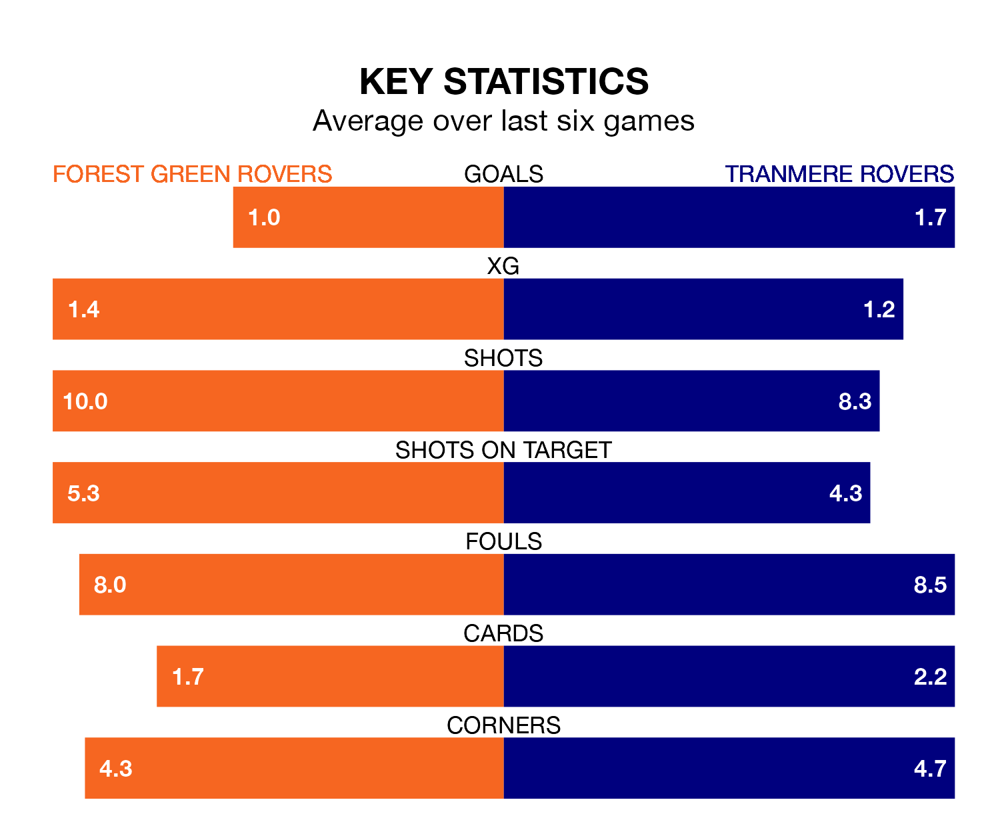

Forest Green Rovers host Tranmere Rovers on Saturday at the Bolt New Lawn in EFL League Two.
In their last league match, on February 17, Forest Green lost to Crawley Town 2-0 away.
Tranmere won, 4-0 at home against Stockport County, with Jordan Turnbull (two), Conner Jennings and Tom Davies on the scoresheet.
Forest Green are 23rd in the table after 32 games, of which they have won five and drawn eight, earning 23 points.
Tranmere are six places ahead of Forest Green Rovers in 17th, with 12 wins and four draws putting them on 40 points.
With 32 goals in 32 games so far this season, the Green are the league's second-lowest scorers with 1.0 goals per game. And they are conceding more than average, letting in 60 goals at a rate of 1.9 per game.
Tranmere Rovers, meanwhile, are above average scorers, with 1.6 goals per game, compared to a league average of 1.5. They have conceded 1.5 goals per game.
In the last 10 years, Forest Green and Tranmere have played each other on 14 occasions. Forest Green won six of them, Tranmere four, and they drew four times.
On average, the Green scored 1.4 goals and Tranmere 1.1 in those matches.
Their last meeting was on November 11, when Tranmere won 3-0 at home.
The home side are in disappointing form in EFL League Two, with one win and two draws from their last six games.
With two wins and a draw over that period, the visitors' form is slightly better – they have taken seven points from 18, compared to Forest Green's five.
Updated: 10:08 (UTC), 23/02/24